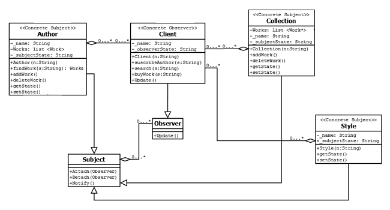
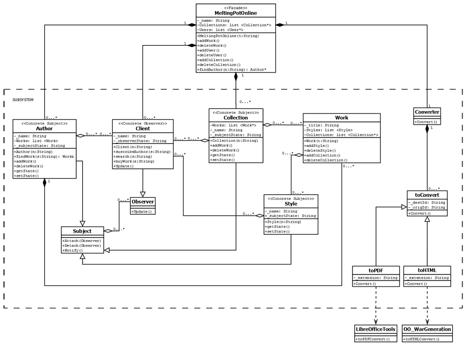

Task 1: Idententify how the Observer pattern can be used to design the part of the system related to subscriptions and notifications.

Task 2: Incorporate the pattern into the class diagram.
The updated facadediagram.dia file is located in:
upf-se-09/doc/facadediagram.dia
upf-se-09/doc/facadediagram.dia
Changes:
Now the Author and the Client classes do not inherit from the Person class; otherwise they are independent classes. We have done this change to avoid the "multiple inheritance" problems at time to apply the Observer pattern. Also the LibreOfficeTools and the OO_WarGeneration classes have been excluded from the Subsystem because they are external libraries. The relation between some classes have been modified too.
